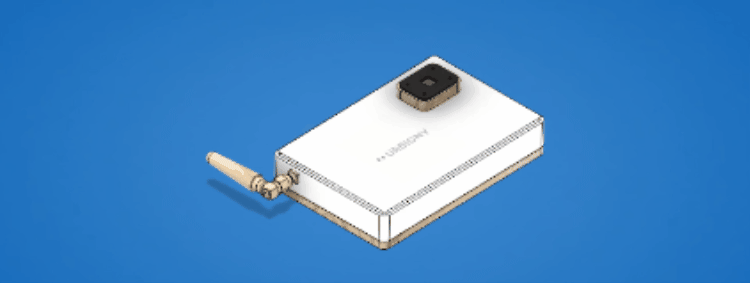
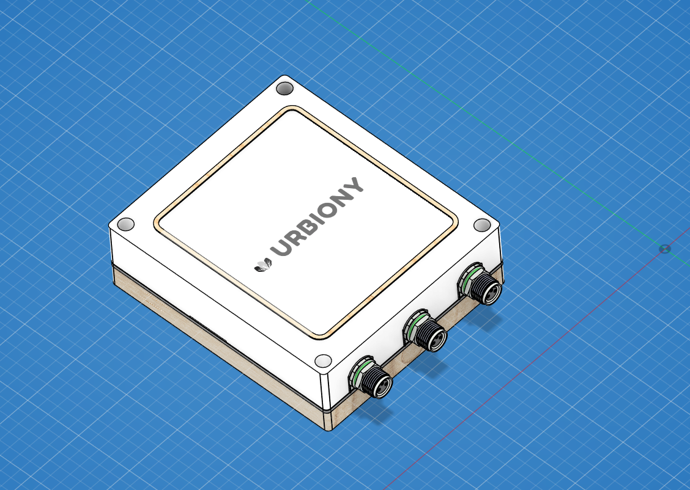
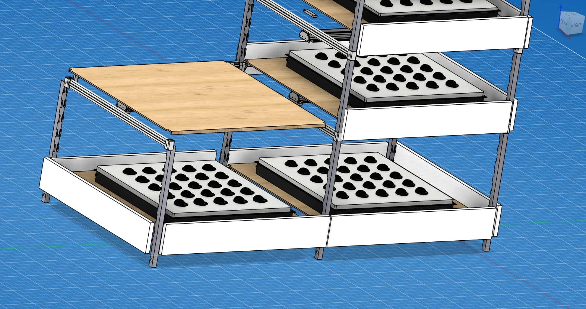
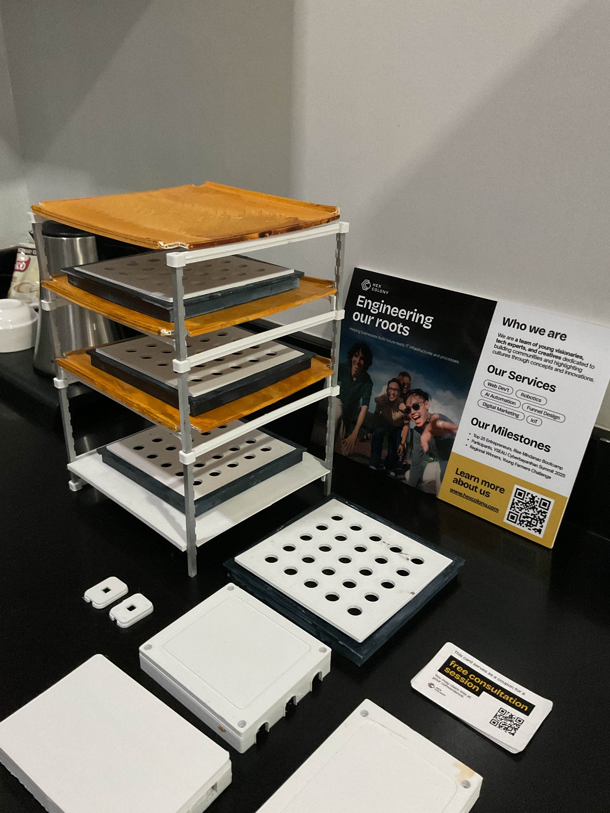
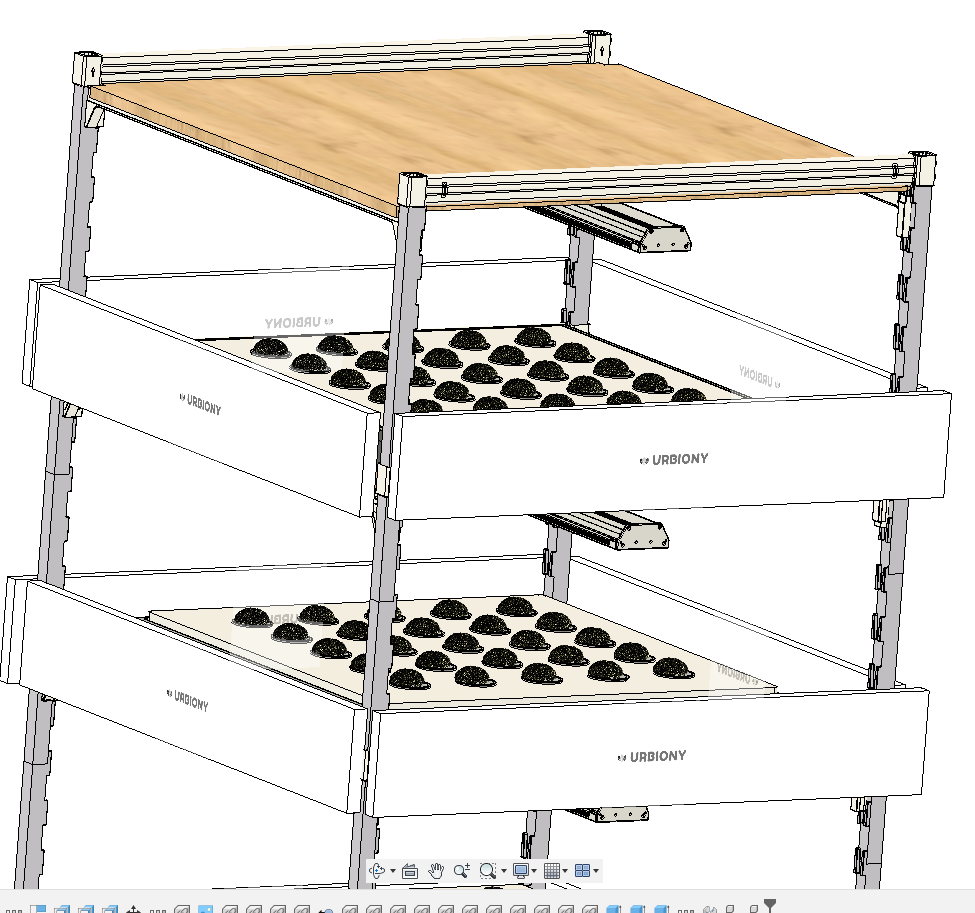
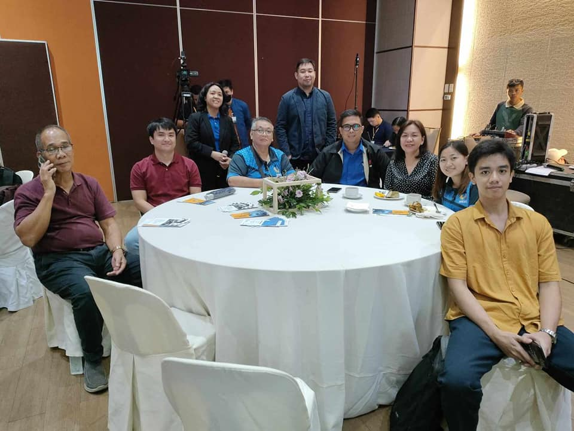

2026 -

Recent: Sir Rj Igdon and I started solving problems facing our community by using a vertical-axis wind turbine. The goal is small-scale, low-wind, omnidirectional power.
2025 -

Founding Member — 3D Modeler, Hex Colony
Full 3D mechanical design and simulation, including technical drawings, STL/STEP exports, CNC CAM, BOM, and simulation data. Served as sole designer of the 3D-printed model, structurally validated through FEA simulation and verified by a licensed site engineer for load-bearing performance.
Full 3D mechanical design and simulation, including technical drawings, STL/STEP exports, CNC CAM, BOM, and simulation data. Served as sole designer of the 3D-printed model, structurally validated through FEA simulation and verified by a licensed site engineer for load-bearing performance.





2022 -

BSc at University of Science and Technology of Southern Philippines in Mechanical Engineering, and non-traditional in computational modeling and numerical simulation. I first got into Engineering, watching Walter Lewin's lectures. Also had been grateful to work with Dr. Junar Landicho, Dr. Jolou Miraflor, Prof. Shandy Pañares.
I was later mentored by Dr. Ismael Talili, who introduced me to academic research and its real-world relevance. Under his guidance, I learned how to conduct research and publish in Scopus-indexed journals. I also had the opportunity to participate in several conferences, which further enriched my academic and professional growth.
I am also a student assistant at Power Institute in 2022, Thanks to Dr. Clark Darwin Gozon , where I learned and understand about the ways of an engineer: Proposals, research, observing how to manage projects, paper works, reports, and lastly to effectively communicate findings.
In my free time, I do volunteering work at Google Developer Groups - Cagayan de Oro City, Philippines. where I help support community events, assist with technical sessions, and contribute to initiatives that promote software development and technology education.


I was later mentored by Dr. Ismael Talili, who introduced me to academic research and its real-world relevance. Under his guidance, I learned how to conduct research and publish in Scopus-indexed journals. I also had the opportunity to participate in several conferences, which further enriched my academic and professional growth.
I am also a student assistant at Power Institute in 2022, Thanks to Dr. Clark Darwin Gozon , where I learned and understand about the ways of an engineer: Proposals, research, observing how to manage projects, paper works, reports, and lastly to effectively communicate findings.
In my free time, I do volunteering work at Google Developer Groups - Cagayan de Oro City, Philippines. where I help support community events, assist with technical sessions, and contribute to initiatives that promote software development and technology education.
